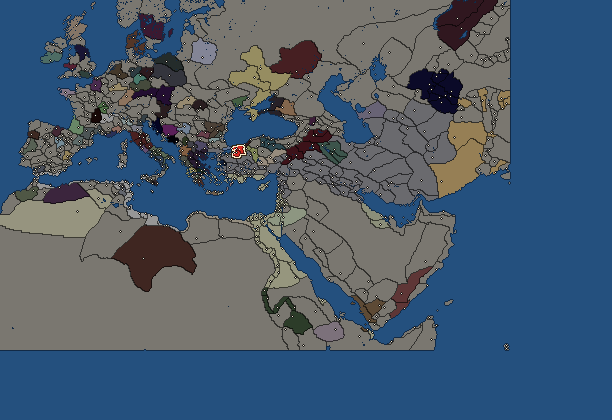
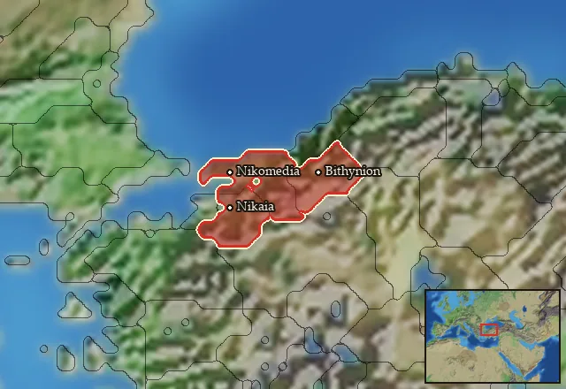

RTR: Imperium Surrectum
RTR: Imperium SurrectumBithynia


- difficulty Difficult
- Thracian culture
- believes
 Bithynian
Bithynian - 2 settlements
- capital Nikomedia
- 10,600 manpower
- 3 characters
- 18 faction units
- 434 regional units
The campaign brief
"Zipoetes [...] was succeeded by the eldest of his children, Nicomedes, who acted not like a brother but as an executioner to his brothers. However, he strengthened the kingdom of the Bithynians, particularly by arranging for the Gauls to cross over to Asia, and as was said before, he founded the city which bears his name." – Memnon, History of Heraclea, 12.5-6
We descend from a proud people. Our ancestors were once feared by the Greeks for their fierce prowess in battle, and remained free and strong for generations. So great was their power that part of them decided to cross the sea and come to this land, where they established their rule. Our people still follow in their hallowed footsteps, guarding our freedom and thereby honouring our fathers.
It was my own grandfather, the mighty Bas, who defeated the Macedonians who were sent by their great king Alexander to conquer us; it was my father, our first king Zipoetes, who succesfully resisted the potentates Antigonos and Lysimachos. Now, fate has selected me as the one to lead our people against the next Greek at our borders, this Seleukid king. Proud Bithynians! Fear not the overwhelming odds stacked against us, for these are our lands and our forests, our hills and our villages, that we must defend! We have already forced Antiochos to retreat before, and we will do so again.
I am king Nicomedes, the first of that name. It is told that the goddess Bendis assisted my mother at my birth, while several additional favourable portents have been observed throughout my life, foretelling great fortune ... Is it not a sign of divine guidance that I, and not my brothers, am your king? Two of them I have disposed of with my own hands, the third is exiled, left to rot in ignominy.
I was the first of our people to make alliances with Greek cities, to establish public recognitions of our power. For the first time in our history, we are not alone in our fight, but also lead the great Northern League against this so-called king of Asia! Having achieved all this in just the short time since my accession, is it not reasonable to expect many greater deeds yet to come? Could we, fierce Bythinians, one day claim our proper and secure place in the land of the Greeks, free of their jealousy and aggression?
Unsheathe your swords now, don your helmets and pick up your shields! Let us make Bithynia a graveyard, a graveyard for the reputation of another of these pesky Greek kings!
Starting settlements
Bithynia begins with 2 settlements and 10,600 manpower.
| Settlement | Region | Size | Manpower | Already built | Settlement | Region | Size | Manpower | Already built |
|---|---|---|---|---|---|---|---|---|---|
| Nikomedia (capital) | Bithynia | large town | 5,300 | 12 buildings | Nikaia | Notia Bithynia | large town | 5,300 | 11 buildings |
What is already built in each settlement
Nikomedia, in Bithynia: Small Treasury, Governor's Villa, Wooden Palisade, Homeland, Region Information Scroll, Roads, Local Barter, Trade Port, Grape Orchards (Rural), Irrigation Ditches (Crops), Basic Armoury, Cisterns (Sanitation)
Nikaia, in Notia Bithynia: Small Treasury, Governor's Villa, Wooden Palisade, Homeland, Region Information Scroll, Roads, Local Barter, Grape Orchards (Rural), Irrigation Ditches (Crops), Basic Armoury, Cisterns (Sanitation)
Homeland
Bithynia's homeland is 3 regions. Only there can it install the Homeland government (more on homelands).

Starting diplomacy
Allied with (4):  Byzantium ·
Byzantium ·  Galatians ·
Galatians ·  Heraclea Pontica ·
Heraclea Pontica ·  Ptolemaic Empire
Ptolemaic Empire
Trade agreements with (4):  Byzantium ·
Byzantium ·  Galatians ·
Galatians ·  Heraclea Pontica ·
Heraclea Pontica ·  Ptolemaic Empire
Ptolemaic Empire
At war with (1):  Seleucid Empire
Seleucid Empire
Like every faction, it is also at war with the  Free Peoples, who hold every settlement no faction does.
Free Peoples, who hold every settlement no faction does.
Faction mechanics
From the game's own guide. See also the other game guides.
Special Mechanics
Bithynia has a mercenary centre in Nikaia, check its Region Information Building for more details.
Military reforms
Bithynian reforms requirements: Control 20 cities.
Unlocks: Bithynian Thureophoroi, Bithynian Royal Peltasts, Bithynian Epibatai
Units you can recruit
The same as in the main campaign.
Starting characters
| Name | Role | Age | Name | Role | Age | Name | Role | Age | |||
|---|---|---|---|---|---|---|---|---|---|---|---|
| Nikomedes | General | 30 | Drenis | General | 35 | Skaris | Admiral | 20 |
Reforms
For every faction: Military innovations have arrived!, Second wave of military innovations have arrived!.